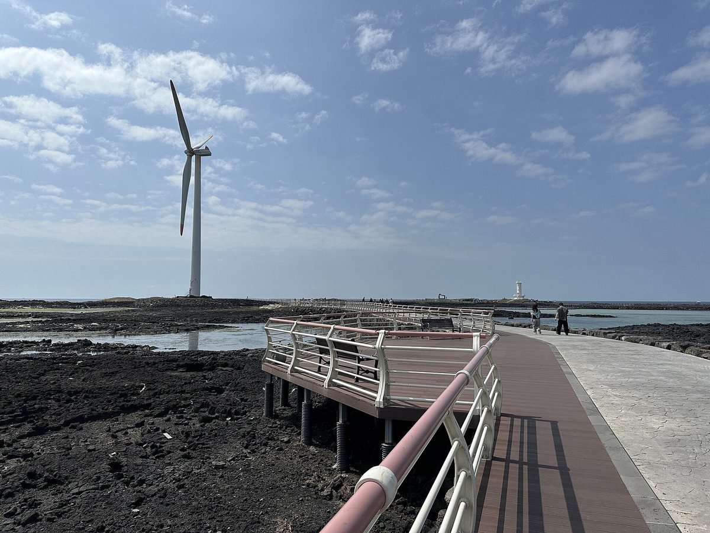

제주 재생에너지 이익 '주민 환원 기준'부터 세워야…지역 기획, 신안 햇빛·바람연금 누적 300억 원 사례 들어 제주형 모델 설계 주문

국비 98억 원 분산에너지 실증, 전기차·주택 소유 여부 따라 참여 기회 달라…요금 절감과 개발이익 공유는 재원·원칙 달라, 사업비·운영비 뺀 배분 가능 이익 산정도 과제
제주가 분산에너지 사업을 넓히는 과정에서 재생에너지 개발이익을 도민에게 돌려줄 기준을 먼저 세워야 한다는 지역 언론 기획이 29일 나왔다. 제주도는 올해 정부 분산에너지 특화지역 공모과제 2건에 선정돼 국비 98억 원을 확보했으며, 전기차 배터리로 전력을 공급하는 V2G와 주택·마을 단위 에너지 생산·저장·소비 모델을 넓힐 계획이다. 기획은 양방향 충전 전기차를 가진 주민과 그렇지 않은 주민, 태양광을 달 수 있는 주택 소유자와 임차인, 초기 투자비를 낼 수 있는 가구와 그렇지 못한 가구 사이에 참여 기회가 다르다며, 참여자 수익과 일반 주민의 공공편익을 나눠 설계하고 전기요금 절감과 발전사업 개발이익 공유를 구분해 다뤄야 한다고 주문했다. 제주도는 그동안 분산에너지 도민 토론회에서 주민 공동설계, 발전시설과의 거리를 고려한 소득 배분, 사업 전 과정의 투명성 강화가 필요하다는 제안을 받아 온 것으로 전해졌다. 비교 사례로 든 전남 신안군은 2018년 10월 개발이익 공유정책을 시행해 2021년 4월 안좌면에서 처음 햇빛연금을 지급했고, 햇빛·바람연금은 2021년 첫 지급액 21억 원에서 지난해 10월까지 누적 300억 원을 넘었으며 군민 절반가량에게 1인당 분기마다 10만~68만 원을 지역사랑상품권으로 준다. 기획은 신안 방식을 그대로 옮길 수는 없다며 제주 풍력단지별 주민 참여·수익 환원 현황을 비교하고, 수익성이 떨어지거나 전력시장 여건이 바뀌어도 약속을 지킬 수 있는 구조인지, 사업비와 운영비를 뺀 실제 배분 가능 이익을 어떻게 셀지 검토해야 한다고 짚었다.
시민에너지 관점
신안의 분기 10만~68만 원은 군민 절반가량이 받는 돈인 반면, 제주의 국비 98억 원 실증은 전기차와 지붕을 가진 가구부터 혜택을 보는 구조여서, '참여자 수익'과 '모든 주민의 몫'을 따로 설계하라는 주문은 정확하다. 이익을 나누면 사업성이 떨어진다는 반론이 나올 수 있지만, 주민이 처음부터 지분을 갖고 설계에 참여하면 나눌 몫은 나중에 협상하는 보상이 아니라 사업 수익의 일부로 정해져, 수익성이 흔들려도 약속이 깨지지 않는다. 바람과 햇빛은 도민 모두의 공유자원이므로 세입자나 투자 여력이 없는 가구도 소액 출자나 공동체 기금으로 개발이익에 참여할 길이 열려 있어야 한다. 제주도는 기존 풍력단지별 주민 환원 실적부터 공개하고, 사업비·운영비를 뺀 배분 가능 이익의 산정 기준을 조례로 정하는 일에 나서야 한다.
출처: 제민일보 2026-10-29 김봉철 원문 보기
済州の再生可能エネルギー利益、まず「住民還元の基準」を…地元紙の企画、新安の「ひなた・風年金」累計300億ウォン超の事例を挙げ済州型モデルの設計を求める
国費98億ウォンの分散エネルギー実証、電気自動車や住宅の所有の有無で参加機会に差…料金の節約と開発利益の共有は財源も原則も異なり、事業費・運営費を差し引いた配分可能な利益の算定も課題
韓国済州（チェジュ）が分散エネルギー事業を広げる中で、再生可能エネルギーの開発利益を道民に還元する基準をまず定めるべきだとする地元メディアの企画記事が29日に出た。済州道は今年、政府の分散エネルギー特化地域の公募課題2件に選ばれて国費98億ウォンを確保しており、電気自動車のバッテリーで電力を供給するV2Gと、住宅・村単位のエネルギー生産・貯蔵・消費モデルを広げる計画だ。企画は、双方向充電ができる電気自動車を持つ住民とそうでない住民、太陽光を設置できる住宅所有者と賃借人、初期投資を負担できる世帯とできない世帯の間で参加の機会が異なるとして、参加者の収益と一般住民の公共的な便益を分けて設計し、電気料金の節約と発電事業の開発利益の共有を区別して扱うべきだと求めた。済州道はこれまで分散エネルギーの道民討論会で、住民による共同設計、発電施設との距離を考慮した所得配分、事業全過程の透明性強化が必要だという提案を受けてきたという。比較例として挙げた全羅南道新安（シナン）郡は2018年10月に開発利益共有政策を施行し、2021年4月に安佐面で初めて「ひなた年金」を支給した。ひなた・風年金は2021年の初回支給額21億ウォンから昨年10月までに累計300億ウォンを超え、郡民の半数ほどに1人当たり四半期ごとに10万～68万ウォンを地域商品券で支給している。企画は新安の方式をそのまま移すことはできないとして、済州の風力発電団地ごとの住民参加・収益還元の現状を比べ、収益性が下がったり電力市場の条件が変わったりしても約束を守れる仕組みか、事業費と運営費を除いた実際の配分可能な利益をどう算定するかを検討すべきだと指摘した。
市民エネルギーの視点
新安の四半期10万～68万ウォンは郡民の半数ほどが受け取るお金である一方、済州の国費98億ウォンの実証は電気自動車や屋根を持つ世帯から恩恵を受ける仕組みであり、「参加者の収益」と「全住民の取り分」を別々に設計せよという注文は的確だ。利益を分ければ事業性が落ちるという反論も出うるが、住民が最初から持ち分を持って設計に参加すれば、分け合う取り分は後から交渉する補償ではなく事業収益の一部として決まり、収益性が揺らいでも約束は崩れない。風と日差しは道民全体の共有資源であり、賃借人や投資の余力がない世帯も少額出資や共同体基金を通じて開発利益に参加できる道が開かれているべきだ。済州道は既存の風力団地ごとの住民還元の実績をまず公開し、事業費・運営費を差し引いた配分可能な利益の算定基準を条例で定めることに取りかかるべきだ。
出典: 済民日報 2026-10-29 キム・ボンチョル 原文を読む
济州可再生能源收益应先确立"居民返还标准"…地方媒体策划报道以新安"阳光·风力年金"累计超300亿韩元为例，呼吁设计济州模式
98亿韩元国费分散能源示范项目，是否拥有电动汽车和住房导致参与机会不同…节省电费与共享开发收益的财源和原则不同，扣除项目费和运营费后的可分配收益如何计算也是课题
韩国济州在扩大分散能源项目的过程中，应首先确立把可再生能源开发收益返还给居民的标准——当地媒体29日刊发的策划报道提出了这一主张。济州道今年入选政府分散能源特化地区招募课题2项，获得98亿韩元国费，计划扩大利用电动汽车电池供电的V2G项目，以及以住宅、村庄为单位的能源生产、储存和消费模式。报道指出，拥有双向充电电动汽车的居民与没有的居民、能安装光伏的房主与租户、能负担初期投资的家庭与无力负担的家庭之间，参与机会并不相同，因此呼吁把参与者收益与普通居民的公共利益分开设计，并将节省电费与共享发电项目开发收益区别对待。据悉，济州道此前在分散能源居民讨论会上收到了居民共同设计、按与发电设施的距离分配收入、加强项目全过程透明度等建议。作为比较案例的全罗南道新安郡于2018年10月实施开发收益共享政策，2021年4月在安佐面首次发放"阳光年金"；阳光·风力年金从2021年首次发放的21亿韩元起步，到去年10月累计已超过300亿韩元，约一半郡民每人每季度可领取10万至68万韩元的地区消费券。报道认为新安模式不能照搬，建议比较济州各风电场的居民参与和收益返还现状，并审视在收益下降或电力市场条件变化时能否信守对居民的承诺，以及扣除项目费和运营费后的实际可分配收益应如何计算。
市民能源视角
新安每季度10万至68万韩元惠及约一半郡民，而济州98亿韩元国费示范项目却是拥有电动汽车和屋顶的家庭先受益，因此"参与者收益"与"全体居民份额"分开设计的主张切中要害。有人可能会说分享收益会降低项目经济性，但如果居民从一开始就持股并参与设计，分享的部分就不是事后谈判的补偿，而是项目收益的一部分，即使收益波动，承诺也不会落空。风和阳光是全体道民的共有资源，租户和没有投资能力的家庭也应能通过小额出资或社区基金分享开发收益。济州道应先公开现有各风电场的居民返还实绩，并着手以条例规定扣除项目费和运营费后可分配收益的计算标准。
来源: 济民日报 2026-10-29 김봉철（Kim Bong-cheol） 查看原文
Jeju should set rules for returning renewable energy profits to residents first, local series argues, citing Sinan's sunlight and wind pensions that have passed 30 billion won
A 9.8 billion won state-funded distributed energy pilot favours households with EVs and their own roofs; bill savings and profit sharing need separate funding and principles, and distributable profit after costs must be defined
As Jeju expands distributed energy projects, it should first set clear rules for returning renewable energy profits to residents, a local newspaper feature series argued on 29 October. Jeju Province was selected this year for two government distributed energy zone projects and secured 9.8 billion won in state funding, and plans to expand vehicle-to-grid (V2G) supply from electric car batteries as well as household- and village-level models for producing, storing and using energy. The series noted that opportunities to take part differ between residents who own bidirectional-charging EVs and those who do not, between homeowners who can install solar and tenants, and between households that can afford upfront costs and those that cannot, and called for participants' returns to be designed separately from public benefits for all residents and for bill savings to be treated separately from sharing the profits of power projects. Jeju Province has reportedly received proposals at its residents' forums on distributed energy for joint design with residents, income distribution that takes distance from generation facilities into account, and greater transparency throughout projects. The series cited Sinan County in South Jeolla Province, which introduced a renewable development profit-sharing policy in October 2018 and paid its first sunlight pension to residents of Anjwa-myeon in April 2021; its sunlight and wind pensions grew from 2.1 billion won in the first year, 2021, to more than 30 billion won cumulatively by last October, paying about half of the county's residents between 100,000 and 680,000 won per person each quarter in local gift vouchers. Saying Sinan's approach cannot simply be copied, the series urged Jeju to compare resident participation and profit returns at each of its wind farms and to examine whether arrangements can keep their promises when profitability falls or market conditions change, and how distributable profit after project and operating costs should be calculated.
Citizen Energy View
Sinan's quarterly 100,000 to 680,000 won reaches about half of the county's residents, whereas Jeju's 9.8 billion won pilot benefits households with EVs and roofs first, so the call to design "participants' returns" and "every resident's share" separately is spot on. Some will argue that sharing profits makes projects less viable, but when residents hold equity and help design a project from the start, their share is fixed as part of project income rather than compensation negotiated later, and the promise holds even when returns wobble. Wind and sunlight are resources held in common by all Jeju residents, so tenants and households without savings to invest should also have a way into development profits through small investments or community funds. Jeju Province should start by publishing what each existing wind farm returns to residents and by setting, in an ordinance, how distributable profit after project and operating costs is to be calculated.
Source: Jemin Ilbo 2026-10-29 Kim Bong-cheol Read the original